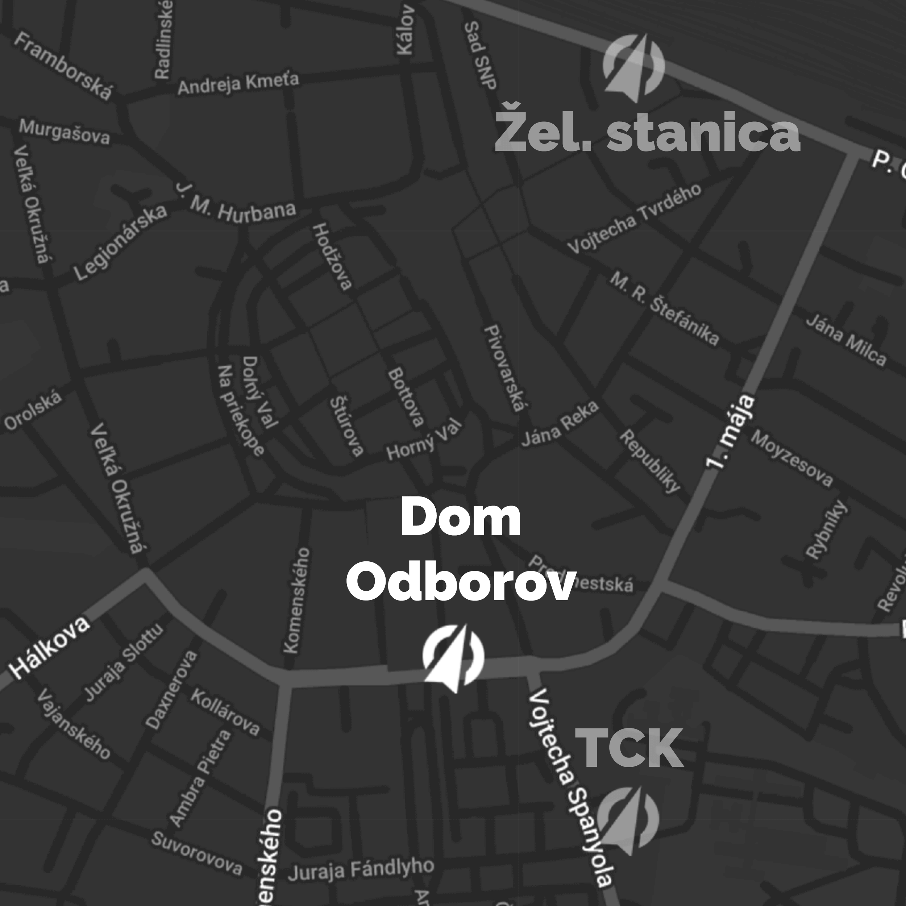

O KPM
Už čoskoro sa spolu stretneme v Žiline po veľmi dlhých a únavných štyroch rokoch na Konferencii pre pracovníkov s mládežou. Sme veľmi vďační za vás a za to, ako verne slúžite na vašich dorastoch, mládežiach a vo vašich zboroch. Tento rok chceme oslavovať, tešiť sa spolu ale najmä budeme hovoriť o téme tohtoročného KPM. Sme poslami. Každý jeden z nás má dôležité poslanie. Zdieľanie Ježišovej dobrej správy je základným kameňom našej viery - je to to, k čomu Kristus vyzval svojich učeníkov aj nás. Chceme sa vzájomne inšpirovať, povzbudiť a vystrojiť, aby sme boli poslami najväčšej nádeje v Ježišovi Kristovi.
KPM, teda, Konferencia pracovníkov s mládežou je organizovaná s cieľom trénovať, pomáhať a inšpirovať mladých lídrov, ktorí slúžia vo svojom lokálnom zbore, alebo naberajú odvahu začať. Počas 4 dní sa stretáva viac ako 500 mladých ľudí, vedúcich, ktorí sa chcú učiť a potom vrátiť naspäť domov do svojho zboru a verne slúžiť ďalej. KPM je 70 hodín spoločenstva, seminárov, hlavných programov, uctievania, Božieho slova, nápadov, času s priateľmi, mentormi, spolubojovníkmi. Tréningové centrum Kompas ho s láskou organizuje od roku 1992.
by TCKompas
since 1992
Rečníci
V Nitre je aj s manželom súčasťou zboru Apoštolskej cirkvi – Equippers, kde slúžia vo vedení mládeže UNLOCK. Peťka pracuje pre TCKompas ako koordinátorka projektu EXIT TOUR. Po nociach rada pečie a počúva pri tom podcasty. Nádej prináša prostredníctvom preventívnych prednášok na školách, ktoré sú jej srdcovkou.
Peťka Šulková
Ako apoštol a vizionár okrem iného založil cirkevný zbor Kristus Mestu, medzinárodný cirkevný zbor Equippers Budapest a biblickú školu Gateway College. Od roku 2006 žije v Nitre aj so svojou manželkou Marti a tromi synmi. Je už treťou generáciou pastorov a svoje duchovné dedičstvo si veľmi váži. Kázaním doteraz priniesol nádej ľuďom už vo viac ako 20 krajinách sveta.
Miro Tóth
Manžel, otec, kazateľ, manažér, komunikátor. Má za sebou Technickú Univerzitu vo Zvolene, Evanjelickú bohosloveckú fakultu Univerzity Komenského a odbor Média a komunikácia v Nórsku. Nerád sa háda, rád počúva iných. Túži po tom, aby Boží príbeh prinášal nádej stále novým ľuďom a hľadá inovatívne spôsoby ako by k tomu mohol dopomôcť.
Slavo Slávik
Ako kazateľ v CB Žilina vášnivo slúžil 8 rokov. Dnes pracuje ako misionár v TCKompas. Má rád pomaranče, neustúpi od pravdy a chcel by si vyskúšať povolanie stand-up komika. Snaží sa prinášať nádej svojej rodine, manželke a dvom dcérkam, ale aj každému, kto číta zdroje na stránke Point Online.
Majo Cabadaj
Kapely
ESPÉ
ECAVZA &
Za Kostolom
Worship
Dávid Vaško
Band
KPM Band
Program
| 13:00 | Registrácia |
| 19:30 | Večerný program Posol nádeje |
| 21:30 | Ká-fé-em |
ŠTVRTOK
| 9:00 | Ranný program Srdce na správnom mieste |
| 11:00 | Labyrint |
| 12:30 | prestávka na obed Čas v tímoch |
| 15:30 | Semináre |
| 18:00 | Prestávka na večeru |
| 19:30 | Večerný program Milosti plní |
| 21:30 | Ká-fé-em |
PIATOK
| 9:00 | Ranný program Bok po boku |
| 11:00 | Share |
| 12:30 | Prestávka na obed Čas v tímoch |
| 15:30 | Semináre |
| 18:00 | Prestávka na večeru |
| 19:30 | Večerný program Zasvieť |
| 21:30 | Ká-fé-em |
SOBOTA
| 9:00 | Ranný program Považujte za doručené |
| 11:00 | Čas v tímoch |
| 12:00 | Cesta domov |
NEDEĽA
Registrácia
Je možné prihlásiť sa aj na mieste, ale aspoň 30 minút pred programom, aby ste sa stihli zaregistrovať.
Vstup na 1 hlavný program stojí 10€.
Ubytovanie si objednáš v registračnom formulári. Dá objednať aj na mieste, a to až do naplnenia kapacít.
Stravu neponúkame, ale vybavíme ti super zľavy v meste.
ďalšie info
MIESTO A KONTAKT
Miesto konferencie:
Dom odborov, A. Bernoláka 51, Žilina

Kontakt:
kpm@tckompas.sk